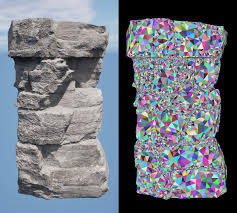
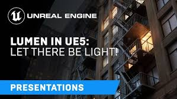
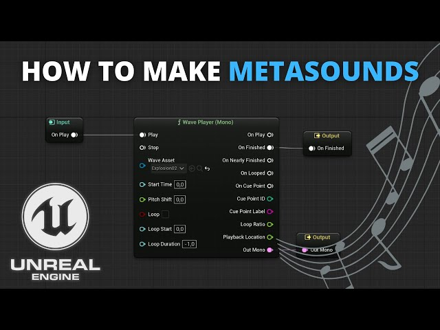

Nanite

Nanite es una tecnología de geometría virtualizada que permite a los desarrolladores crear detalles a nivel de píxel con millones de polígonos, sin sacrificar rendimiento. Esta revolucionaria tecnología elimina las preocupaciones sobre el conteo de polígonos y los detalles de nivel de detalle (LOD).
Características principales de Nanite:
- Geometría virtualizada: Permite importar y renderizar modelos con cientos de millones de polígonos directamente.
- Streaming inteligente: Solo carga los polígonos necesarios para cada frame, optimizando el rendimiento.
- Sin LODs manuales: Elimina la necesidad de crear versiones de menor resolución de los modelos.
- Detalles microscópicos: Permite detalles a nivel de píxel incluso en objetos muy cercanos a la cámara.
- Rendimiento optimizado: Mantiene altas tasas de fotogramas incluso con escenas extremadamente detalladas.
Lumen

Lumen es un sistema de iluminación global dinámica completamente en tiempo real que reacciona inmediatamente a los cambios de escena y luz. Esto permite a los desarrolladores crear entornos más inmersivos con iluminación realista que se adapta dinámicamente.
Características principales de Lumen:
- Iluminación global en tiempo real: Calcula rebotes de luz difusos infinitos para escenas enteras.
- Reflejos precisos: Genera reflejos de alta calidad que cambian con la iluminación y el entorno.
- Sombras dinámicas: Crea sombras realistas que responden a cambios en la iluminación.
- Adaptación automática: Se ajusta a diferentes escalas, desde espacios interiores pequeños hasta vastos paisajes exteriores.
- Compatibilidad con materiales: Funciona con todos los tipos de materiales, incluidos los translúcidos.
MetaSounds

MetaSounds es un sistema de audio de alto rendimiento que ofrece control completo sobre la jerarquía DSP de audio, similar a los materiales para gráficos. Este sistema permite a los desarrolladores crear experiencias de audio dinámicas y altamente personalizables.
Características principales de MetaSounds:
- Audio procedimental: Genera sonidos dinámicamente basados en parámetros del juego.
- Flujo de trabajo visual: Interfaz similar a los Blueprints para diseñar sistemas de audio complejos.
- Optimización automática: Ajusta la calidad del audio según la carga del sistema.
- Espacialización avanzada: Posicionamiento 3D preciso del sonido en entornos virtuales.
- Integración con la física: Genera sonidos realistas basados en interacciones físicas.
World Partition

World Partition es un sistema que divide automáticamente el mundo en celdas para transmitir solo lo necesario, permitiendo crear mundos enormes con gestión eficiente de memoria y recursos. Esta tecnología facilita la creación de entornos vastos y detallados.
Características principales de World Partition:
- División automática: Segmenta el mundo en celdas que se cargan y descargan dinámicamente.
- Streaming eficiente: Carga solo las partes del mundo que son visibles o relevantes para el jugador.
- Colaboración mejorada: Permite que varios desarrolladores trabajen en diferentes áreas del mismo mundo simultáneamente.
- Gestión de datos: Organiza los activos del mundo para un acceso y carga más rápidos.
- Escalabilidad: Funciona eficientemente tanto en mundos pequeños como en vastos paisajes abiertos.
Otras Características Destacadas
Chaos Physics
Sistema de física de alta fidelidad que simula destrucción, colisiones y efectos dinámicos con gran realismo y rendimiento optimizado.
Niagara VFX
Sistema de efectos visuales que permite crear partículas complejas y efectos visuales avanzados con un flujo de trabajo intuitivo y gran flexibilidad.
Control Rig
Herramienta de animación que facilita la creación de controles personalizados para personajes y objetos, mejorando el flujo de trabajo de animación.
Quixel Bridge
Integración con la biblioteca Megascans que proporciona acceso a miles de assets fotorrealistas de alta calidad directamente en el editor.